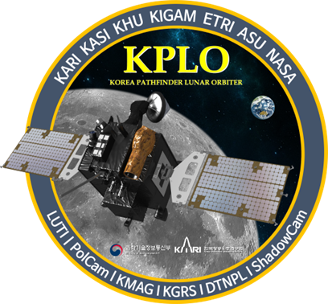

다누리(KPLO)

우리나라 달 궤도선 다누리(KPLO)는 2022년 8월 5일 발사되었습니다.
달 상공 100 ± 30 km 고도의 극궤도를 돌며 약 1년 간 달 탐사에
나섭니다.
다누리의 임무는 달 탐사 및 심우주 통신에 필요한 핵심기술을 개발하고
달 환경을 과학적으로 조사하며, 새로운 우주 기술을 실험하는
것입니다.
이를 위해 광시야 편광 카메라(PolCam), 고해상도 카메라(LUTI), 감마선
분광기(KGRS),
자기장 측정기(KMAG),
영구음영지역카메라(ShadowCam), 지연내성통신망 실험장치(DTNPL)를
탑재하고 있습니다.